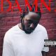

Kendrick Lamar
Rap
Kendrick Lamar est un rappeur américain né en 1987 à Compton, en Californie. Il commence sa carrière au début des années 2000 et devient progressivement l'un des artistes majeurs du rap américain. Ses albums abordent régulièrement son parcours personnel et des sujets sociaux. Parmi ses principaux albums figurent good kid, m.A.A.d city, To Pimp a Butterfly, DAMN., Mr. Morale & the Big Steppers et GNX.
Discographie

Section.80 (2011)
Best track: HiiiPoWeR

Good Kid, M.A.A.D City (2012)
Best track: Swimming Pools

To Pimp a Butterfly (2015)
Best track: Alright

DAMN. (2017)
Best track: HUMBLE.

Mr. Morale & the Big Steppers (2022)
Best track: N95

GNX (2024)
Best track: squabble up